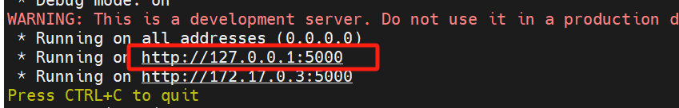

保护docker内部源代码
Reference
源代码加密
项目结构:
src为源码路径project_name: ./Dockerfile ./compile.py ./src ./start.py
compile.py内容：# -*- coding: utf-8 -*- import os from Cython.Build import cythonize from setuptools import setup, Extension def c_compile(name, modules): """ 使用Cython进行编译 :param str name: 项目名称 :param list modules: [(module_name, source_file_path), (..., ...)] :return: """ module_list = [] for m in modules: module_list.append( Extension(name=m[0], sources=[m[1]]) ) setup( name=name, ext_modules=cythonize( module_list=module_list, language_level=3, # python3 ), zip_safe=False, install_requires=[ 'Cython', ] ) modules = [] # 遍历找到需要编译的py文件 for root, dirs, files in os.walk('./src'): for file in files: if not file.endswith('.py'): continue dir_list = root.split(os.path.sep) name = '.'.join(dir_list).lstrip('./') modules.append((name + '.' + os.path.splitext(file)[0], os.path.join(root, file))) print(modules) # 开始编译 c_compile('compile', modules) # 删除py文件和c文件 for root, dirs, files in os.walk('./src'): for file in files: if file.endswith('.so'): continue file_path = os.path.join(root, file) os.remove(file_path)
dockerfile内容：# 第一阶段：构建阶段 FROM python:3.10-slim AS build # 安装必要的工具 RUN apt-get update && apt-get install -y --no-install-recommends gcc && apt-get clean && rm -rf /var/lib/apt/lists/* # 安装 Python 依赖 COPY requirements.txt ./ RUN pip install --no-cache-dir -r requirements.txt # 安装 pyvrp COPY pyvrp-0.9.1-cp310-cp310-manylinux_2_17_x86_64.manylinux2014_x86_64.whl . RUN pip install --no-cache-dir pyvrp-0.9.1-cp310-cp310-manylinux_2_17_x86_64.manylinux2014_x86_64.whl # 第二阶段：运行阶段 FROM python:3.10-slim # 暴露端口 EXPOSE 5000 # 复制构建阶段的依赖和应用程序 WORKDIR /work COPY --from=build /usr/local/lib/python3.10/site-packages /usr/local/lib/python3.10/site-packages COPY src /work/src COPY start.py /work/ # 拷贝编译后的结果 # 配置环境变量和工作目录 ENV PYTHONPATH=/work # 设置工作目录的权限 # 安装 acl 工具 RUN apt-get update && apt-get install -y acl # 设置 ACL，拒绝 root 用户访问 RUN setfacl -m u:root:--- /work/src RUN chown -R root:root /work/src # 设置基本权限：所有者有读、写、执行权限；所属组和其他用户有读、执行权限 RUN chmod -R 755 /work/src # 设置 ACL，禁止其他用户写入（复制需要写权限） RUN setfacl -R -m o::rx /work/ RUN groupadd -r myuser && useradd -r -g myuser myuser # 更改文件的所有者和所属组 RUN chown myuser:myuser /work/start.py # 设置文件权限 RUN chmod 500 /work/start.py USER myuser # 启动 Flask 应用 CMD ["python3", "src/start.py"]
打包镜像
保存源文件代码，将代码文件夹copy一个新的文件夹
源代码-docker执行以下代码：
bash cd junlebao-test-docker # 编译so文件 python3 compile.py build_ext --inplace -j8 sudo docker build -t junlebao-test-slim . sudo docker save -o junlebao-test-slim.tar junlebao-test-slim
在测试环境加载镜像
在测试环境中，使用 docker load 命令加载镜像：
sudo docker load -i /目标路径/junlebao-test-slim.tar
将 /目标路径/junlebao-test-slim.tar 替换为实际保存文件的路径。
查看加载的镜像
加载完成后，使用以下命令查看镜像：
sudo docker images
运行容器
使用 docker run 命令运行容器，示例：
sudo docker run -p 5000:5000 --name junlebao-test-slim --read-only junlebao-test-slim
验证容器运行
打开浏览器，访问 http://<测试环境IP>:5000，确保 Flask
应用正常响应请求。

查看日志
查看容器日志的命令：
sudo docker logs -f junlebao-test-slim
传json测试
新建一个
docker_jsontest.py，内容如下：url和file_path按照自己的情况更改.```python import os import requests import json
# 获取当前文件所在目录的绝对路径 root_path =
os.path.abspath(os.path.join(os.path.dirname(file), ““))
# 设置目标请求 URL（根据需求取消注释对应 URL） url =
‘http://127.0.0.1:5000/process’
# 设置要发送的文件路径（注意：需确保文件真实存在） file_path =
f”{root_path}/input/test-2025-03-07.json” # 替换为实际的 JSON
文件路径
# 读取文件内容并发送 POST 请求 with open(file_path, ‘rb’) as file:
json_data = json.load(file) response = requests.post(url,
json=json_data) # 使用 json 参数发送 JSON 数据
# 处理响应结果 if response.status_code == 200: response_data =
response.json() print(“submitting succeed , JSON data:”,
response_data) else: print(f”submitting failed, status code:
{response.status_code}“) ```
执行文件
python3 docker_jsontest.py